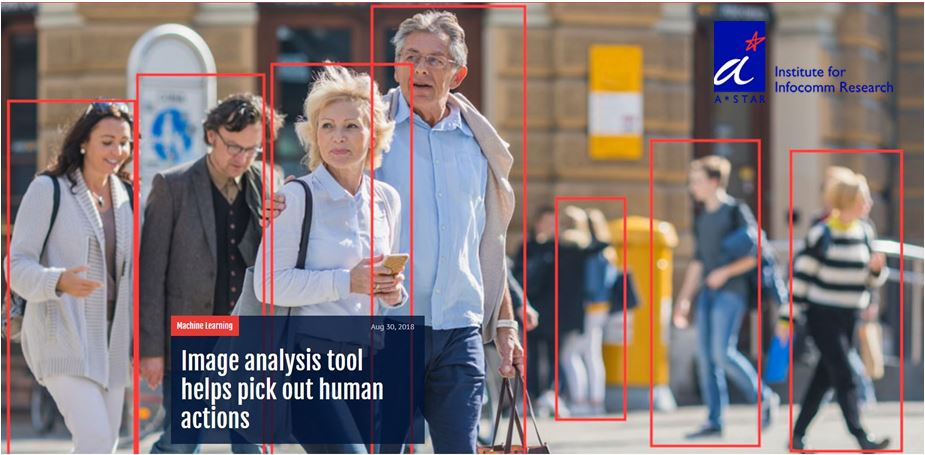

Rapid Multi-modal Video Analytics
Introduction:
Over the last decade, with the proliferation of surveillance cameras and mobile devices,
there has been an exponential growth in the number of videos being captured and archived.
Develop holistic models which can recognize scenes, detecting objects and understanding human actions
are of great importance due to various applications. For example, in video surveillance, it is important
to detect suspicious events, objects, and people. For healthcare, detecting a falling down activity of a
senior people at home can enable timely rescue. While most current models approach the problem using full
supervision which requires extensive annotation and hand-craft heuristics, we approach the problems
using weak supervision from a cognitive view in a principled optimization framework.

Paper:
- Hongyuan Zhu, Romain Vial, Shijian Lu
"TORNADO: A Spatio-Temporal Convolutional Regression Network for Video
Action Proposal",
IEEE International Conference on Computer Vision (ICCV2017)
[PDF]
[Code]
- Hongyuan Zhu*, Romain Vial*, Shijian Lu, Xi Peng, Huazhu Fu, Yonghong Tian, Xianbin Cao,
"YoTube: Searching Action Proposal via Recurrent and Static Regression Networks.",
IEEE Transactions on Image Processing (TIP), A*STAR Research Highlight , 2018.
[PDF]
- Romain Vial, Hongyuan Zhu, Yonghong Tian, Shijian Lu
"Search Video Action Proposal with Static and Recurrent YOLO",
IEEE International Conference on Image Processing (ICIP2017, Student Travel Grant, Oral)
[PDF]
[Code]
Media Coverage:
Related Works:
- Xi Peng, Joey Tianyi Zhou, Hongyuan Zhu, "k-meansNet: When k-means Meets Differentiable Programming",
in arXiv: 1808.07292, 2018. [PDF]
- Anran Wang, Anh Tuan Luu, Chuan-Sheng Foo, Hongyuan Zhu, Yi Tay, Vijay Chandrasekhar, "Holistic Multi-modal Memory Network for Movie Question Answering" (Top1,MovieQA2018),
in arXiv: 1808.07292, 2018. [PDF]
- Joey Tianyi Zhou, Jiawei Du, Hongyuan Zhu*, Xi Peng, Yong Liu, Rick Siow Mong Goh. "AnomalyNet: An Anomaly Detection Network for Video Surveillance",
IEEE Transactions on Information Forensics & Security (TIFS) , 2019.
[PDF]
[Code]